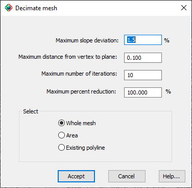

|
|
Toolbar:
Menu: CAD-Earth > Mesh > Mesh Explorer. Mesh Explorer node:
Context Menu: Vertices > Decimate mesh
|
|
|
Command line: CE_MESHEXPLORER
CAD-Earth version: Premium. |
(1).png)
.png)
.png)
(1).png)
Command description:
You can decrease mesh vertices by specifying a maximum slope deviation and maximum distance to plane value. For each vertex analyzed, an average slope and distance to the triangle's plane that shares the same vertices will be calculated. If the average slope or distance to plane value is less than the values specified, the vertex will be removed.
The decimation can be applied to the whole mesh or to vertices inside an area defined by selecting points or selecting a closed polyline in the drawing.
The removal of vertices will continue until the number of iterations or the maximum percent reduction is reached. The percent reduction is calculated by dividing the number of vertices removed by the total number of vertices multiplied by 100.
After finalizing the process, a message will display the total number of vertices removed and processed and the final reduction percentage.

ØMaximum slope deviation. If the average slope of a vertex is equal to or higher than this value, the vertex will be removed.
ØMaximum distance from vertex to plane. If the distance from a vertex to an average plane is higher than this value, the vertex will be removed.
ØMaximum number of iterations. If the number of iterations is equal to this value, the mesh decimation will stop.
ØMaximum percent reduction. If the percent reduction reaches this value, the mesh decimation will stop.
ØSelect.
•Whole mesh. The decimation will be applied to the entire mesh.
•Area. The decimation will be applied to vertices inside an area defined by picking points.
•Existing polyline. The decimation will be applied to vertices inside a selected closed polyline.
Tips:
•If you specify a value equal to zero for the maximum slope deviation or the maximum distance from the vertex to plane, the slope or the distance to plane value will not be considered to remove a vertex.
•You can use this command to remove the mesh vertices and decrease the mesh size on areas where the average slope is almost the same.
Copyright © 2023 Arqcom Software
Google Earth© is a registered trademark of Google inc. All other trademarks are the property of their respective owners.